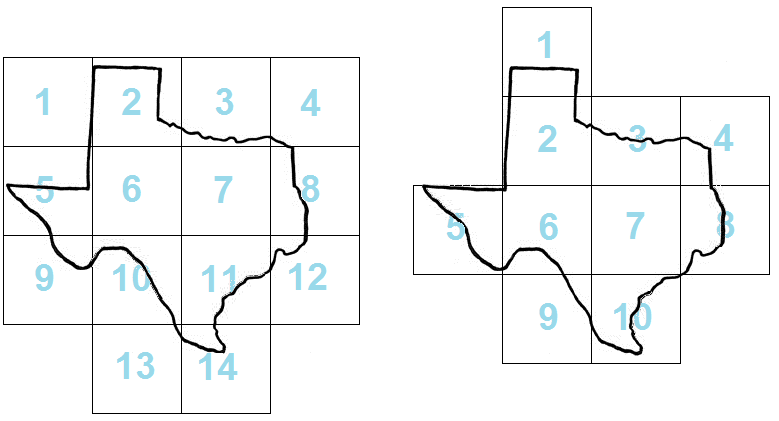

ACM-ICPC World Finals 2013 · Problem G
Publishing maps is not an easy task. First you need some appropriate transformation to display the earth’s spherical shape in a two-dimensional plane. Then another issue arises – most high-quality maps are too large to be printed on a single page of paper. To cope with that, map publishers often split maps into several rectangular tiles, and print each tile on one page. In this problem, you will examine this “tiling” process.
The International Cartographic Publishing Company (ICPC) needs to cut their printing costs by minimizing the number of tiles used for their maps. Even with a fixed tile size (determined by the page size) and map scale, you can still optimize the situation by adjusting the tile grid.
The left side of Figure G.1 shows 14 map tiles covering a region. The right side shows how you can cover the same region with only 10 tiles, without changing the tile sizes or orientation.

Your task is to help the ICPC find the minimum number of tiles needed to cover a given region. For simplicity, the region will be given as a closed polygon that does not intersect itself.
Note that the tiles must be part of a rectangular grid aligned with the x-axis and y-axis. That is, they touch each other only with their whole sides and cannot be rotated. Also note that although all input coordinates are integers, tiles may be located at non-integer coordinates.
The polygon may touch the edges of marginal lines (as in Sample Input 2). However, to avoid floating-point issues, you may assume the optimal answer will not change even if the polygon is allowed to go outside the map tiles by a distance of 10−6.
The input consists of a single test case. The first line of a test case contains three integers: n, xs, and ys. The number of polygon vertices is n (3 ≤ n ≤ 50), and xs and ys (1 ≤ xs, ys ≤ 100) are the dimensions of each tile. Each of the next n lines contains two integers x and y (0 ≤ x ≤ 10xs, 0 ≤ y ≤ 10ys), specifying the vertices of the polygon representing the region (in either clockwise or counter-clockwise order).
Display the minimal number of tiles necessary to cover the whole interior of the polygon.
12 9 9 1 8 1 16 6 16 9 29 19 31 23 24 30 23 29 18 20 12 22 8 14 0 14 8
10
4 5 7 10 10 15 10 15 17 10 17
1